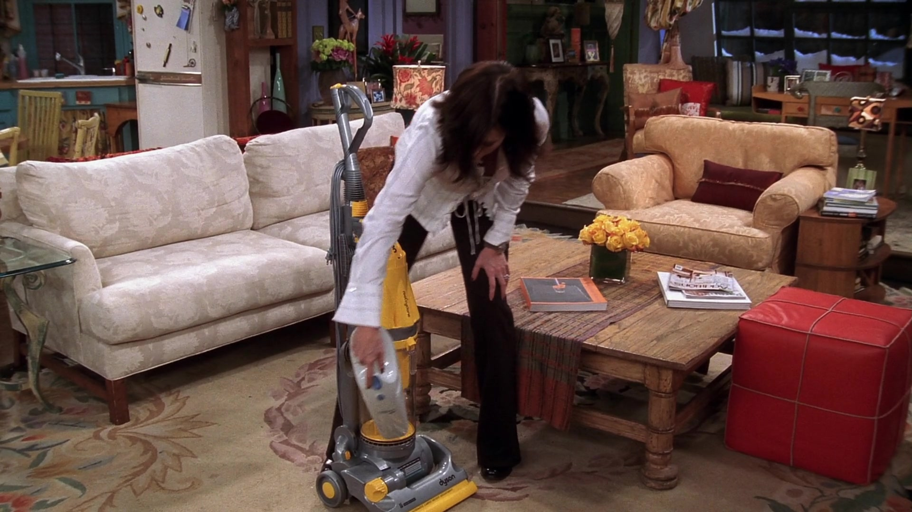

Monica Geller
Monica is a competitive perfectionist who's a professional chef. Known for her obsessive cleanliness and control-freak nature, she is the maternal character of the group. She is Ross's younger sister and ends up marrying Chandler Bing.
Check out some Fun Facts about Monica!
👇

Monica's obsession with cleaning and organization is a running joke in the series. Her apartment is always spotless, and she can't stand messes. She categorizes her towels into 11 specific groups. She owns a vacuum for her vacuum cleaner.